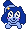

Hi!! I am lily and I am an artist. I am 21 years and I live in the UK.
I am studying Game Design and I also make youtube videos about valve games sometimes. I mostly draw furry stuff, a lot of which are intended for game projects.
I'm very open to working with people, though
I cannot promise a single thing for that. Be it scheduling, motivation or an actual ceiling.
I would still like to hear and be involved if i can!!
If u want contact me, you can message me on discord @slowbun
This dog is called opal by the way

She's super important. Press on her to return to the home page.